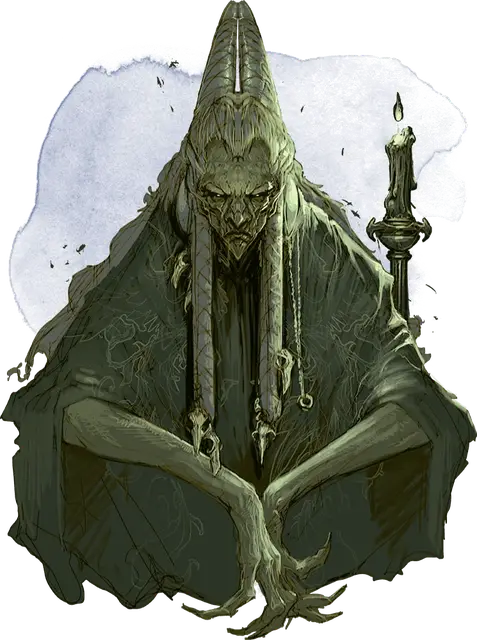

Баба Лысага
Baba Lysaga
Средний Гуманоид (Человек, Перевёртыш), хаотично-злой, именной НИП

Класс Доспеха 15 (природный доспех)
Хиты 120 (16к8 + 48)
Скорость 30 футов
| мод | спас | ||
|---|---|---|---|
| СИЛ | 18 | +4 | +4 |
| ЛОВ | 10 | +0 | +0 |
| ТЕЛ | 16 | +3 | +3 |
| мод | спас | ||
|---|---|---|---|
| ИНТ | 20 | +5 | +5 |
| МДР | 17 | +3 | +7 |
| ХАР | 13 | +1 | +1 |
Навыки Магия +13, Религия +13
Чувства пассивное Восприятие 13
Языки Общий, Бездны, Великаний, Дварфийский, Драконий
Опасность 11 (7200 опыта)
Бонус мастерства +4
Особенности
Перевёртыш. . Баба Лысага может действием обратиться в рой насекомых (мух) или обратно в её истинную форму. Пока в форме роя, она имеет скорость ходьбы 5 футов и скорость полёта 30 футов. Всё, во что она одета, превращается вместе с ней, но не то, что она несёт в руках.
Благословение Матери Ночи. Баба Лысага защищена от магии прорицания, как если бы на неё было сотворено заклинание необнаружимость [nondetection].
Использование заклинаний. Баба Лысага является заклинателем 16 уровня. Её способность к заклинаниям основана на Интеллекте (Сл спасброска от заклинаний 17, +9 к атакам заклинаниями). Баба Лысага обладает следующими заготовленными заклинаниями волшебника:
• Заговоры (неограниченно): брызги кислоты [acid splash], огненный снаряд [fire bolt], свет [light], волшебная рука [mage hand], фокусы [prestidigitation];
• 1-й уровень (4 ячейки): обнаружение магии [detect magic], волшебная стрела [magic missile], усыпление [sleep], ведьмин снаряд [witch bolt];
• 2-й уровень (3 ячейки): корона безумия [crown of madness], увеличение/уменьшение [enlarge/reduce], туманный шаг [misty step];
• 3-й уровень (3 ячейки): рассеивание магии [dispel magic], огненный шар [fireball], молния [lightning bolt];
• 4-й уровень (3 ячейки): усыхание [blight], Эвардовы чёрные щупальца [evard's black tentacles], превращение [polymorph];
• 5-й уровень (2 ячейки): облако смерти [cloudkill], обет [geas], наблюдение [scrying];
• 6-й уровень (1 ячейка): заданная иллюзия [programmed illusion], истинное зрение [true seeing];
• 7-й уровень (1 ячейка): перст смерти [finger of death], таинственный мираж [mirage arcane];
• 8-й уровень (1 ячейка): слово силы: оглушение [power word stun];
Черты Бабы Лысаги.
Идеал. «Нет любви большей, чем материнская любовь к сыну.»
Привязанность. «Я матерь Страда. Любой, кто сомневается в этом, сгниёт.»
Слабость. «Я не успокоюсь, пока последний из врагов моего сына не будет уничтожен.»
Действия
Мультиатака. . Баба Лысага проводит три атаки своим боевым посохом.
Боевой посох. Рукопашная атака оружием: +8 к попаданию, досягаемость 5 футов, одна цель. Попадание: 7 (1к6+4) дробящий урон, или 8 (1к8+4) дробящий урон если урон двумя руками.
Призыв роя насекомых (Перезарядка после короткого или продолжительного отдыха). Баба Лысага вызывает 1к4 роя насекомых [swarms of insects]. Вызванный рой появляется в незанятом месте в пределах 60 футов от Бабы Лысаги и действует как её союзник. Так продолжается пока рой не погибнет или пока Баба Лысага не распустит его действием.
Описание
Две женщины отдали свои жизни за Страда фон Заровича. Первой была Королева Равеновия ван Ройен [Queen Ravenovia van Roeyen], биологическая мать Страда. Второй была повитуха королевы, верная последовательница Матери Ночи [Mother Night] по имени Баба Лысага [Baba Lysaga]. Она была той, кто вырастил Страда и наставил его на путь следования по стопам отца. Она потом была той, кто почувствовал предрасположенность к величию и тьме в Страде,превосходящую таковые у любого смертного. Лысага уверовала тогда, как и продолжает верить сейчас,что она и есть настоящая мать Страда.
Другая Мать. Когда Страд был ещё младенцем в колыбели, Баба Лысага творила защитные заклинания на него и прокрадывалась в его детскую грозовыми ночами, чтобы петь ему волшебные песни.Она также поместила «искру магии» в него, чтобы он наверняка стал заклинателем.
Нездоровая привязанность Бабы Лысаги к малышу Страду не осталась незамеченной. Получив несколько беспокойных донесений, Королева Равеновия силой изгнала повитуху из королевства. Лысага более не видела Страда, но ей удалось выжить, чтобы узреть триумфы своего любимого мальчика, который всегда был для неё благословенным. Несмотря на ужасы,которые принёс Страд, Лысага видит в нём идеального ребёнка, которого она принесла в этот мир. Страд является единственным, что имеет значение в её жизни.
Ближняя Мать. Во время своего изгнания, Баба Лысага провела множество жертвоприношений Матери Ночи, умоляя её лишить Королеву Равеновию здоровья и послать ей смерть. Желание Лысаги спустя некоторое время сбылось, и после того, как Страд осел в долине Баровия, Лысага переехала настолько близко, насколько посмела.В глубине своего порочного сердца Лысага знает,что Страд никогда не примет её в качестве своей настоящей матери, но для неё невыносимо это его отвержение. В результате, она никогда не выступала против него. Потому она продолжает жить в своём постоянном отрицании, коротая дни, месяцы и годы в практике своей злой магии и поисках путей помощи своему «сыну».
Воронья гибель. В Замке Равенлофт у Бабы Лысаги есть союзники – ковен ведьм. При помощи их, Лысага узнала о возможной угрозе для Страда:тайном сообществе верворонов, называющих себя Хранителями Пера, группе, использующей обычных воронов в качестве шпионов. Страд не воспринимает верворонов как серьёзную угрозу, но Лысага восприняла их как угрозу своему существованию. После длительных поисков и разведки, она узнала, что вервороны укрываются на винодельне Винный Волшебник (глава 12) и она начала войну против неё. Вдобавок она заключила союз с безумными друидами с Холма Былого, убедив их в том, что она родила Страда, которого друиды почитают как бога. С друидами на своей стороне, она собирается избавиться от угрозы верворонов в Баровии.
Дары Матери Ночи. Богиня Матерь Ночи наградила Бабу Лысагу волшебными дарами в награду за не угасающую верность Страду. Её кожа крепка как камень, она хорошо сопротивляется вредоносной магии и она защищена от магии прорицания. Матерь Ночь также поделилась с Лысагой секретом долголетия, который требует от неё купаться в крови животных в ночи полнолуния. Если же у неё не получится сделать это однажды, она быстро постареет и превратится в прах и кости за несколько мгновений.